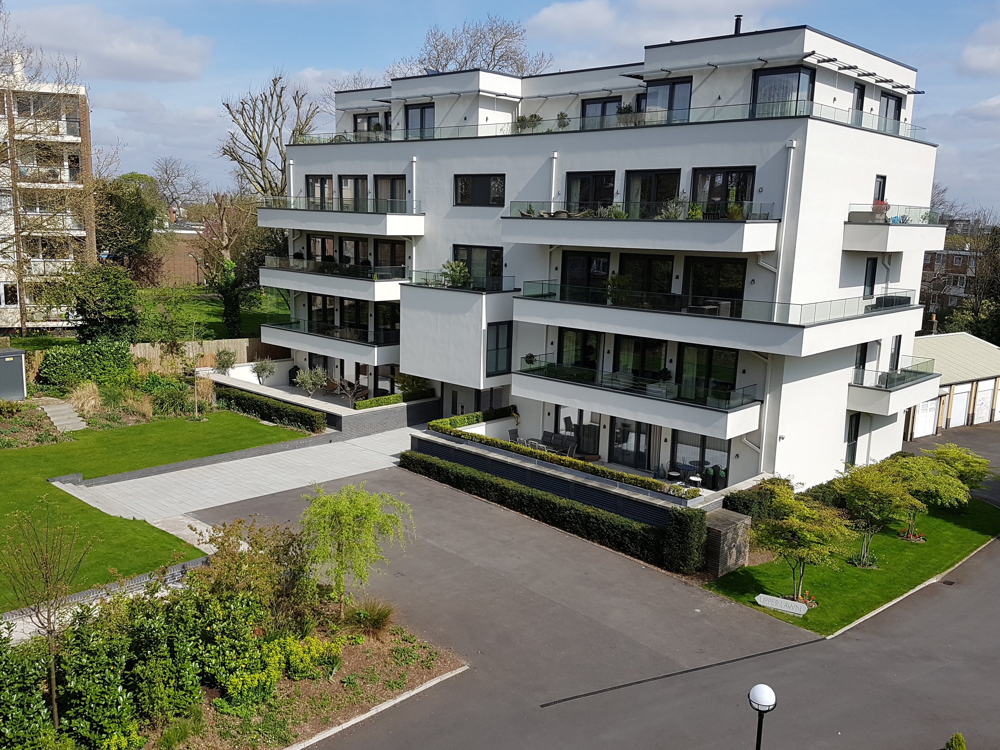
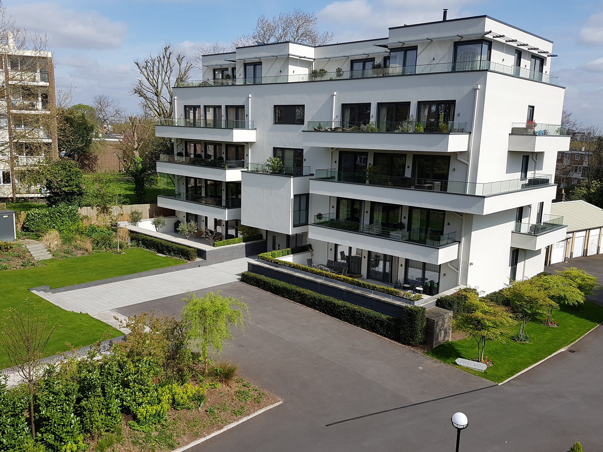
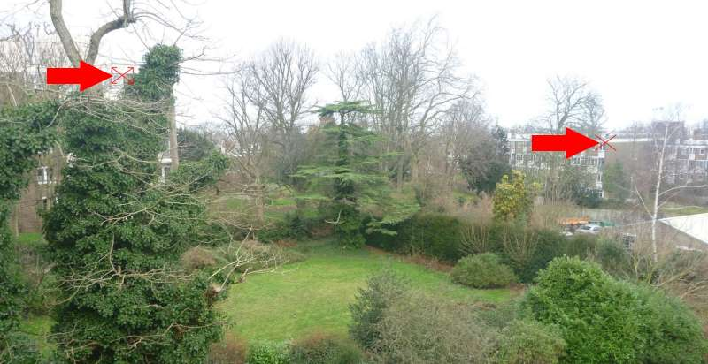
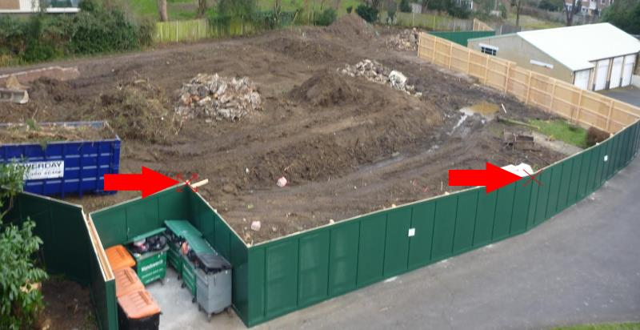
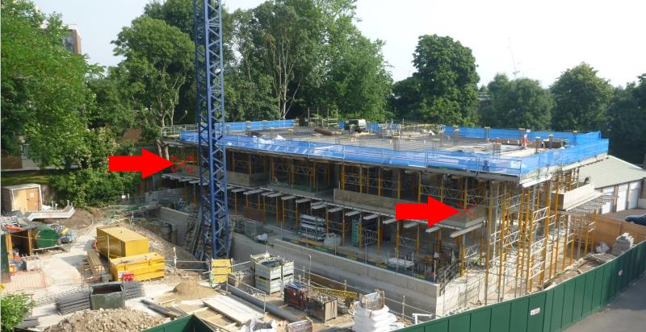

These are four images from the Flats Construction project.
 

As you will see, it is very difficult to identify two alignment points that are locatable in all four images. In such a situation, different approaches might be taken.
The following describes the last option.
Examine the set of images that make up the project and split them into sub-sets of images, with each sub-set containing images where alignment points can be identified. One constraint when forming these sub-sets is that the last image of a sub-set must be the same image as the first image in the following sub-set, and that image must be markable by the alignment points that are used in both sub-sets.
Each sub-set is handled by Zoetic as a project. The Flats Construction project was split into three projects covering (1) original garden; (2) ground clearing; (3) construction of the flats. The alignment points used in the three projects were:
  For Zoetic to recognise a project as a sub-project, the project must be named using a numerical sequence e.g. flat1, flat2, flat3 and Zoetic's Process Sub-projects function should be enabled within Settings. Then, when the first project is loaded (flat1 in the previous example), Zoetic will process the additional sub-projects as being part of the explicitly loaded project (flat1).
It should be noted:
The first and last images of each of the three sub-projects making up the Flats Construction project. Note that the last image is the same as the following sub-project's first image, and that the alignment points presented above are identifiable in the corresponding last and first images.
|
|
|
| Project1 - first image. Reg - windows corners | Project1 - last image. Reg - windows corners |
|
|
|
| Project2 - first image. Reg - points on fence | Project2 - last image. Reg - points on fence |
|
|
|
| Project3 - first image. Reg - points on 1st floor | Project3 - last image. Reg - points on 1st floor |